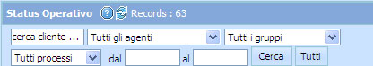
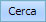

Ricerca per Agente
Previous
Top
Next

La ricerca per
Agente
viene attivata scegliendo dal menu a tendina il nominativo e cliccando sull'icona 
Cliccando sul tasto
compare una piccola maschera
Legenda Azioni/Colori
.
Cliccando sull'icona
si annulla qualunque ricerca fatta.
Records
: Indica il numero dei campi mostrati nella pagina.